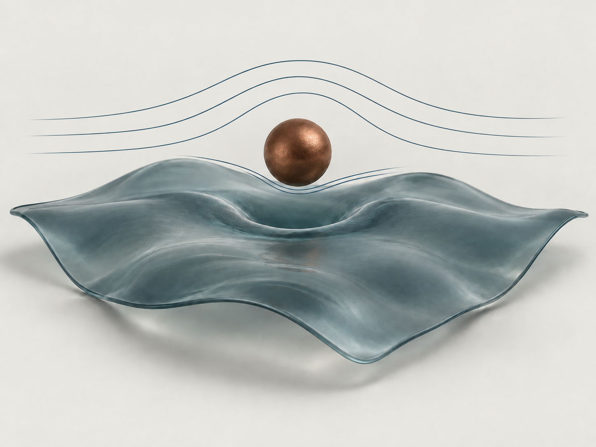

Soft lubrication
How deformation of solid and liquid interfaces changes the forces on nearby moving particles.
School of Physics · Beihang University
Flow at soft interfaces.
Zaicheng Zhang is an Associate Professor in the School of Physics at Beihang University, China. His research focuses on fluid flow and the mechanics of soft interfaces.
He received his PhD from the University of Bordeaux in 2020 under the supervision of Abdelhamid Maali, studying the nanorheology of soft interfaces. He subsequently conducted postdoctoral research with Thomas Salez at the University of Bordeaux (2020–2022), with Abdelhamid Maali at CNRS/LOMA (2023), and with Stefan Karpitschka at the University of Konstanz (2023–2024). He joined Beihang University in 2024.
His current work explores soft lubrication, interfacial rheology, and Brownian dynamics under confinement. Using colloidal-probe atomic force microscopy, confocal microscopy, and total internal reflection fluorescence (TIRF) imaging, he investigates how fluid flow, interfacial deformation, and thermal fluctuations shape forces and particle motion near soft boundaries.
zhangzaicheng@buaa.edu.cn Google Scholar
School of Physics, Beihang University · Beijing, China

How deformation of solid and liquid interfaces changes the forces on nearby moving particles.
Probing soft gels and fluid interfaces through hydrodynamic forces measured by colloidal-probe AFM.
Unsteady drag and Brownian motion near boundaries, linking confinement to particle dynamics.
Polymeric Solvents Control Swelling-Induced Surface Creasing
Preprint · arXiv:2604.20299 (2026)
Hydrodynamic Switching Fronts Polarize Deformable Particle Trains
Preprint · arXiv:2604.05925 (2026)
Nanoscale Electroviscous Lift Force
Preprint · arXiv:2602.12832 (2026)
Glassy–Rubbery Transition-Induced Geometry-Dependent Swelling in Gels
ACS Macro Letters 15, 407–412 (2026)
Journal of Physics: Condensed Matter 38, 095102 (2026)
Physical Review Fluids 11, 024002 (2026)
Measurement of Mechanical Properties of Soft Materials by a Visual Sensing Based Nanoindentation
IEEE/ASME Transactions on Mechatronics 31, 185–194 (2026)
Direct Measurement of the Viscocapillary Lift Force near a Liquid Interface
Physical Review Letters 134, 094001 (2025)
Physics of Fluids 37, 032002 (2025)
Observation of Brownian elastohydrodynamic forces acting on confined soft colloids
Proceedings of the National Academy of Sciences 121, e2411956121 (2024)
Unsteady drag force on an immersed sphere oscillating near a wall
Journal of Fluid Mechanics 977, A21 (2023)
Air/Water Interface Rheology Probed by Thermal Capillary Waves
Langmuir 39, 3332–3340 (2023)
Contactless Rheology of Soft Gels Over a Broad Frequency Range
Physical Review Applied 17, 064045 (2022)
Electroviscous drag on squeezing motion in sphere-plane geometry
Physical Review E 105, 064606 (2022)
Contactless rheology of finite-size air-water interfaces
Physical Review Research 3, L032007 (2021)
An elastohydrodynamic lift force in soft matter
Reflets de la physique 69, 10–15 (2021) · In French; title translated
Delamination and Wrinkling of Flexible Conductive Polymer Thin Films
Advanced Functional Materials 31, 2009039 (2021)
Near-Field Probe of Thermal Fluctuations of a Hemispherical Bubble Surface
Physical Review Letters 126, 174503 (2021)
Direct Measurement of the Elastohydrodynamic Lift Force at the Nanoscale
Physical Review Letters 124, 054502 (2020)
Journal of Microscopy 270, 188–199 (2018)
Viscocapillary Response of Gas Bubbles Probed by Thermal Noise Atomic Force Measurement
Langmuir 34, 1371–1375 (2018)
Physical Review Letters 118, 084501 (2017)
PLOS ONE 10, e0130178 (2015)